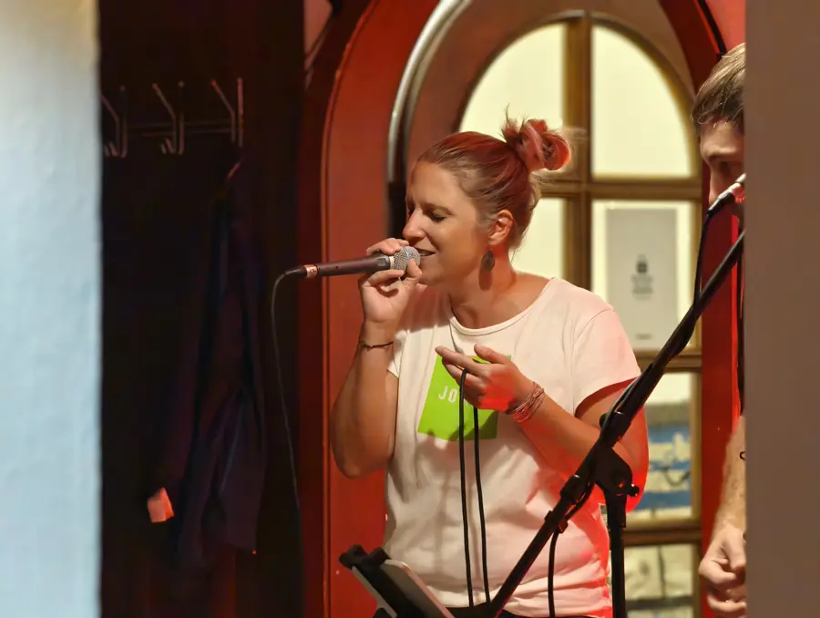
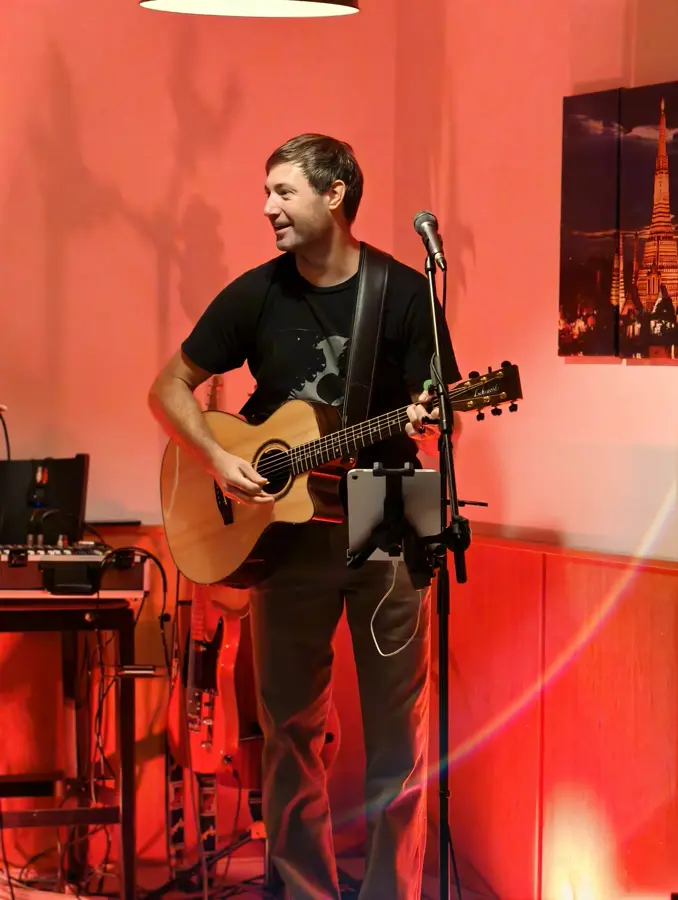
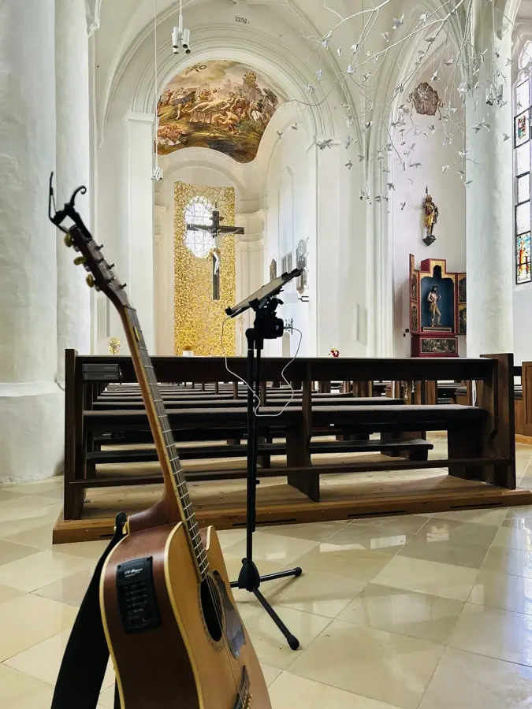
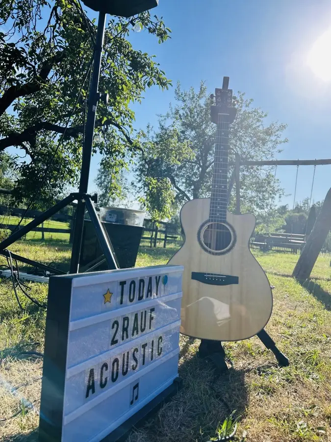
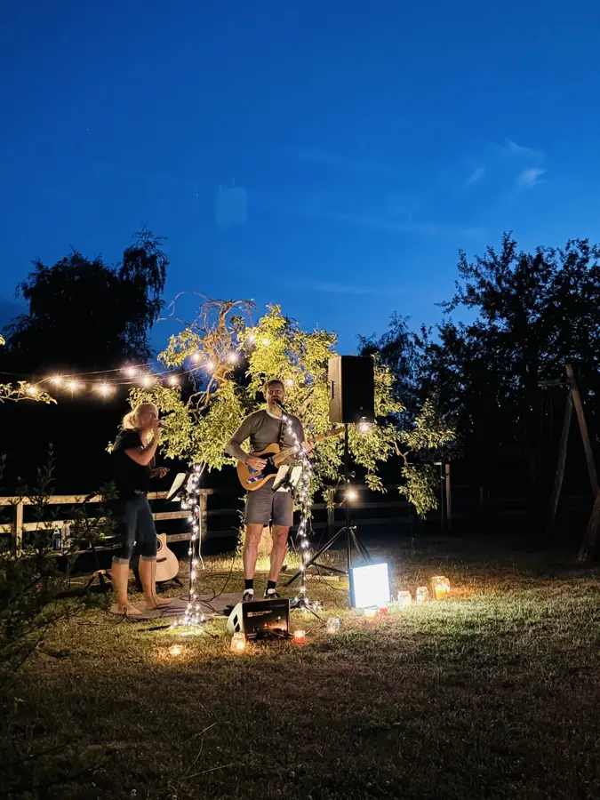
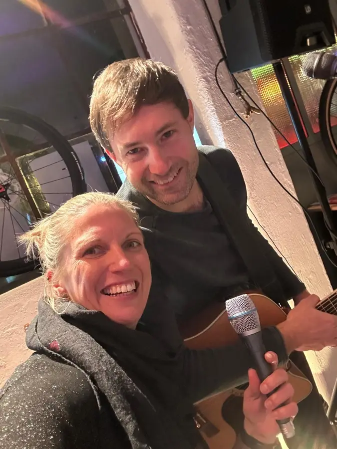

Hochzeit & Trauung
Standesamtlich, kirchlich oder frei, vom Einzug bis zum Auszug.
Akustikduo · Mühldorf & Landshut
Zwei Stimmen, eine Gitarre und viel Gefühl. Für Trauung, Sektempfang und Feier.


Über uns
Als Akustikduo mit Gitarre, Gesang und Mundharmonika begleiten wir Hochzeiten, freie Trauungen, Sektempfänge, Geburtstage und besondere Feiern im Raum Mühldorf, Landshut, Dorfen, Altötting und Wasserburg.
Unsere Musik ist persönlich, stilvoll und genau richtig für Momente, die berühren und in Erinnerung bleiben.
„Zwei Stimmen, eine Gitarre – und jede Menge Gefühl."
Trauerfeier? Auch dort gestalten wir den Rahmen mit einfühlsamer Livemusik, die Trost spendet und Würde gibt.
Repertoire
Immer akustisch, stilvoll und mit viel Gefühl. Eine Auswahl unserer Lieblinge, sortiert nach dem Moment, in dem sie am besten passen.
Euer Wunschlied fehlt? Sagt uns Bescheid, wir schauen gemeinsam, wie es akustisch klingen kann.
Anlässe



Standesamtlich, kirchlich oder frei, vom Einzug bis zum Auszug.
Stilvolle Hintergrundmusik, während sich eure Gäste begegnen.
Livemusik, die zu euch und euren Gästen passt.
Besondere Momente im kleinen Rahmen.
Musik für Empfang, Jubiläum oder Sommerfest.
Konzerte in vertrauter Runde.
Ein würdevoller musikalischer Abschied. Wir spielen leise, einfühlsam und so, wie es zu der Person und zur Familie passt.
Ablauf
Ihr schreibt uns Datum, Ort und Anlass. Wir melden uns bei euch.
Wir sprechen über euren Tag, eure Stimmung und eure Wünsche.
Gemeinsam legen wir die Titel für Einzug, Trauung, Empfang und Feier fest.
Wir bauen rechtzeitig auf, spielen und machen den Moment zu eurem.
Galerie
Hochzeiten, Feiern, Musiknächte und Konzerte in der Region.
Reinhören
Die Videos laden erst nach eurem Klick von YouTube (youtube-nocookie.com). Dabei kann eure IP-Adresse an Google übertragen werden. Mehr dazu in der Datenschutzerklärung.
Termine
Zuletzt gespielt
Für eure Feier buchbar: Hochzeit, Trauung, Sektempfang, Geburtstag und Firmenfeier in der Region Mühldorf, Wasserburg, Erding und Landshut. Jetzt anfragen
Fragen
Wir bringen unsere eigene Anlage mit und stimmen sie auf Raum und Gästezahl ab. Meist genügt eine Steckdose in der Nähe.
Das richtet sich nach eurem Ablauf, von der Trauung bis zu mehreren Sets am Abend. Sagt uns, was ihr euch vorstellt, wir planen es gemeinsam.
Ja. Schickt uns eure Wünsche für Einzug, Trauung, Empfang oder Feier. Wir sagen euch, wie sie akustisch klingen können.
Ja, bei standesamtlichen, kirchlichen und freien Trauungen.
Schwerpunkt sind Mühldorf, Landshut, Dorfen, Altötting, Wasserburg und Erding. Weitere Orte auf Anfrage.
Das hängt von Anlass, Dauer und Anfahrt ab. Schreibt uns Datum und Ort, dann bekommt ihr ein Angebot.
Kontakt
Ihr sucht Livemusik für Hochzeit, freie Trauung, Sektempfang oder eine besondere Feier in der Region Mühldorf und Landshut? Wir freuen uns auf eure Anfrage.
